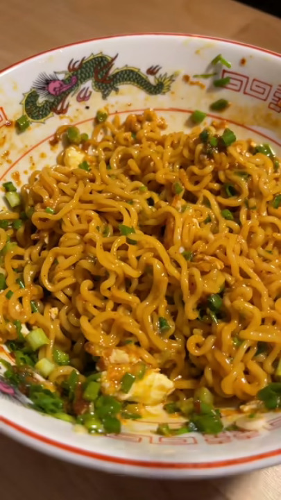

Simple Hot Oil Ramen

Simple Hot Oil Ramen. Bouncy chewy ramen seasoned with a delicious spicy, garlicky chili oil. So tasty, easy to make and great for a quick dinner or lunch.
The ingredients you'll need are as follows:
- Shin Ramyun Noodle Soup Gourmet Spicy
- Black Pepper
- Black Vinegar OR Rice Vinegar
- Seasme seeds
- 1 minced garlic
- 1 egg
- Neutral oil(corn,canola,safflower)
- Chives
Directions:
- Boil the noodles in water for 3 minutes.
- Rinse in cold water to stop the cooking process.
- Put 2/3 of the soup packet in a shallow bowl.
- A dash of black pepper in to the bowl.
- 1 Teaspoon of vinegar in to the bowl.
- A dash of seasme seeds in to the bowl.
- 1 Minced garlic in to the bowl.
- Put two tablespoons of your neutral oil into a pan heating it up right before it starts smoking, taking it off the fire and pouring it into the bowl you'll hear the spices start to sizzle when you do so.
- Mix the contents of the shallow bowl together.
- Add the ramen to the bowl, mix it all together.
- Chop up the chives, sprinkling it on top of the ramen.
- Heat up 2 teaspoons of oil in a frying pan.
- Putting a egg in the frying pan, you want to keep basking the egg using the hot oil in the frying pan until cooked.
- Topping the ramen with the egg you want to break it the egg apart mixing all of the contents together again.
And just like that you're done creating your Simple Hot Oil Ramen, hope you enjoy!
Go back